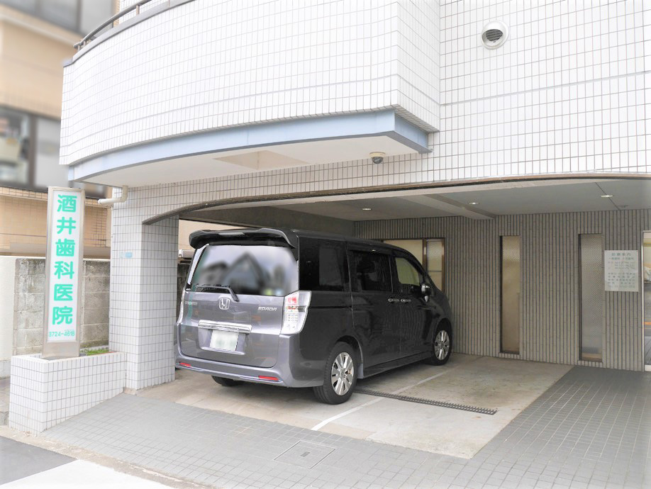

診療時間/アクセス
- 診療時間
- 歯科・小児歯科
- 住所
- 〒152-0034東京都目黒区緑が丘1-7-21トーカングリーンクレスト1F
- TEL
- 03-3724-4618
- 最寄り駅
-
- 東急大井町線「緑が丘」駅徒歩7分
- 東急大井町線「大岡山」駅徒歩10分
- 東急東横線「都立大学」駅徒歩12分
- 東急東横線「自由が丘」駅徒歩13分
- 駐車場
- あり（１台）※ご予約時にお伝えください
- 診療時間
- 月
- 火
- 水
- 木
- 金
- 土
- 日
- 祝
- 9:30～12:30
- ●
- ●
- ●
- -
- ●
- ▲
- -
- -
- 15:00～19:00
- ●
- ●
- ●
- -
- ●
- -
- -
- -
▲ 9:00～12:30
緑が丘駅から徒歩7分、電車でもお車でも通える
東急大井町線「緑が丘」駅 から徒歩7分、東急東横線「都立大学」駅から徒歩12分、２つの線が重なる「自由が丘」駅から徒歩13分という立地にあります。また駐車場も完備しているので、電車でもお車でも通っていただけます。
選ばれる理由
治療前の丁寧な説明で安心感
徹底的なインフォームドコンセント（説明と同意）
患者さんの負担を最小限に
生涯を考えた歯科治療を心掛けています。
患者さんに安心していただけるために、患者さんの話をよく聞き、治療に入る前に治療の順序や説明を丁寧に行います。
分からないことがあれば、ひとつひとつお答えして、納得していただいたうえで治療をうけていただけます。
子供も立派なひとりの患者さん
恐怖心から泣いたり、騒いだりして治療が進まず、治療が受けられずに困っている親御さんも多く通われています。多くの歯科で断られてしまって途方に暮れていた・・などと言う声も少なくありません。
目黒区あいアイ館の障がい者歯科診療で研鑽を積んだ経験から、テンダー・ラビング・ケア（優しく愛をもって治療にあたる）を中心に１０カウント（10 数える間がんばろう）TSD 法（Tell/Touch/Show/Do）などあらゆるテクニックを駆使して治療しています。
子供の将来を見据えて、今後も自信をもって治療に向き合えるよう成長を支援していくことを大切にしています。スモールステップのトレーニングで、多くのお子さんが歯科治療に対する恐怖心を克服し笑顔で通ってくれています。親御さんと、お子さん、そして当院が協力しながらそれぞれの成長発育に合わせた最善のタイミングで予防重視の治療を行っていることも当院の特徴と言えるかもしれません。
親しみやすい人柄でアットホームな歯医者
院長はじめ明るく元気なスタッフ。当院はスタッフ全員が患者さんの立場になり、親身になって寄り添います。スタッフ同士も仲が良く親しみやすい人柄のメンバーばかりで、緑が丘をはじめ、ご紹介で遠方からわざわざ来て頂いたりと、多くの患者さんとの信頼関係を築いています。
地域医療への貢献
緑が丘で唯一の目黒区歯科医師会会員
目黒区歯科医師会では目黒区民の皆様のために日頃から健診・相談・休日診療・保健センターでの乳幼児健診、あいアイ館での障がい者歯科診療、区立幼稚園や区立保育園の園医、区立小学校・区立中学校での校医、幼児の無料フッ素塗布、無料成人歯科健診の実施、高齢者の皆様の為には健康長寿を継続していただくための体操教室や栄養指導など様々な場面で目黒区行政の一端を担っております。
当院は、緑が丘では唯一の会員として、ほとんどの事業に参加し、地域医療に貢献し続けております。
- 目黒区歯科医師会会員
- 目黒区学校歯科医会会員
- 目黒区無料歯科検診
- 目黒区妊産婦歯科検診
- 目黒区八雲あいアイ館歯科診療所担当医
- 目黒区碑文谷保険センター3 歳児健診担当医
- 目黒区大岡山保育園園医
- 目黒区ウィズブック保育園 大岡山園医
- 目黒区立第十一中学校校医
院内環境が整っている
治療器具の滅菌をはじめとする衛生管理の徹底により、患者さんに安心して治療をうけていただけるために院内環境の整備に努めています。
ユニットも一新され、より快適に治療を受けて頂けるようになりました。